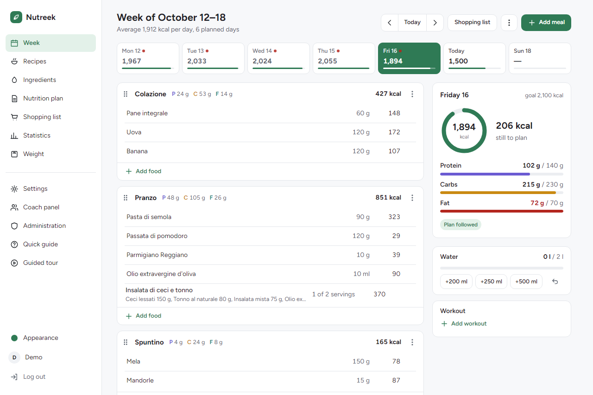
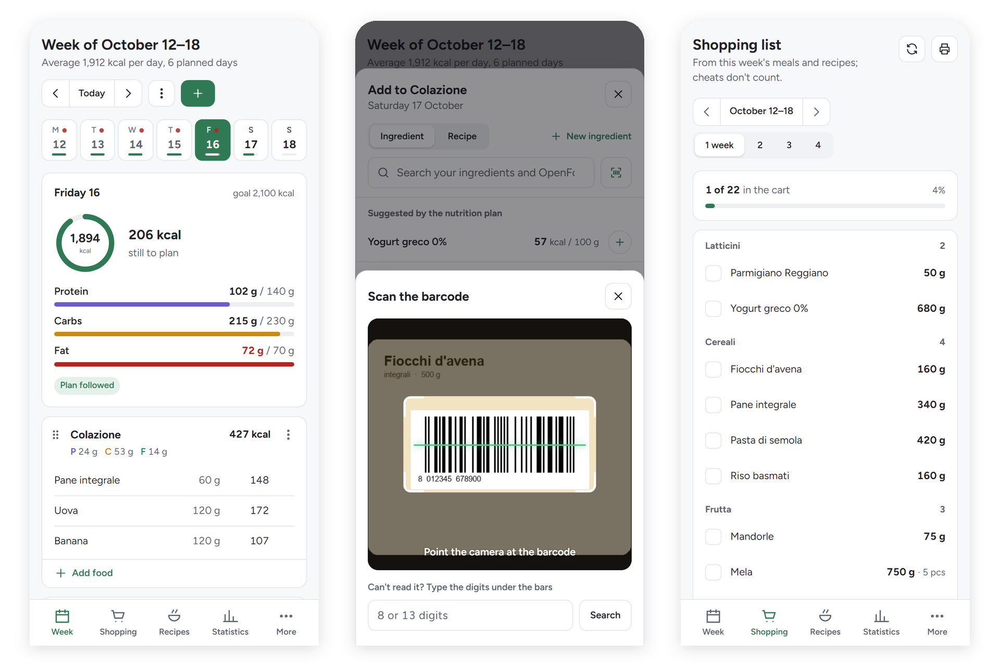
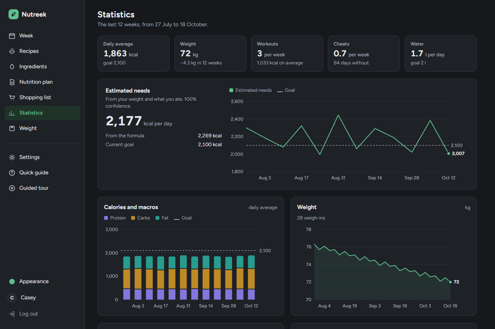

What it is
Nutreek is a self-hosted weekly nutrition planner: meal plans, macros per meal, day and week, offline OpenFoodFacts search, a barcode scanner, adaptive TDEE, weight and hydration tracking, and a coach mode. Installable on your phone.
At a glance
- Backend
- Go 1.27+ (chi, scs, goose, bcrypt, nosurf), hand-written SQL
- Database
- SQLite via modernc.org/sqlite — pure Go, no CGO
- Frontend
- html/template + HTMX + Tailwind CSS; installable as a PWA
- Deploy
- Static binary or a distroless Docker image (~20 MB), health-checked
- Your data
- One SQLite file, with optional scheduled backups and retention
- Licence
- AGPL-3.0


